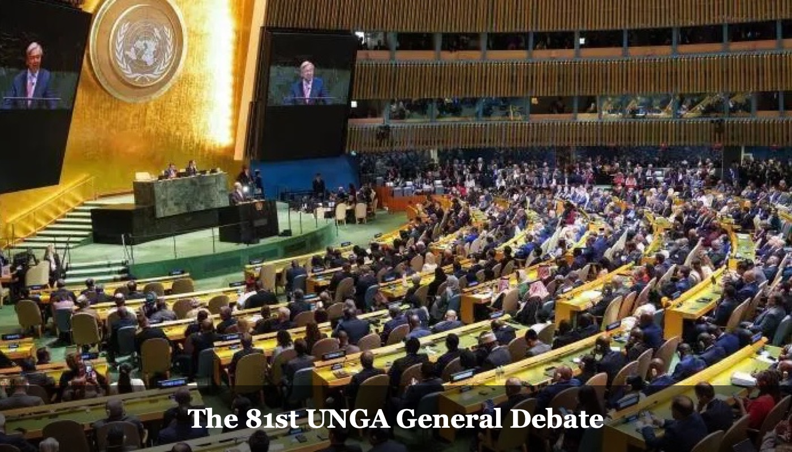
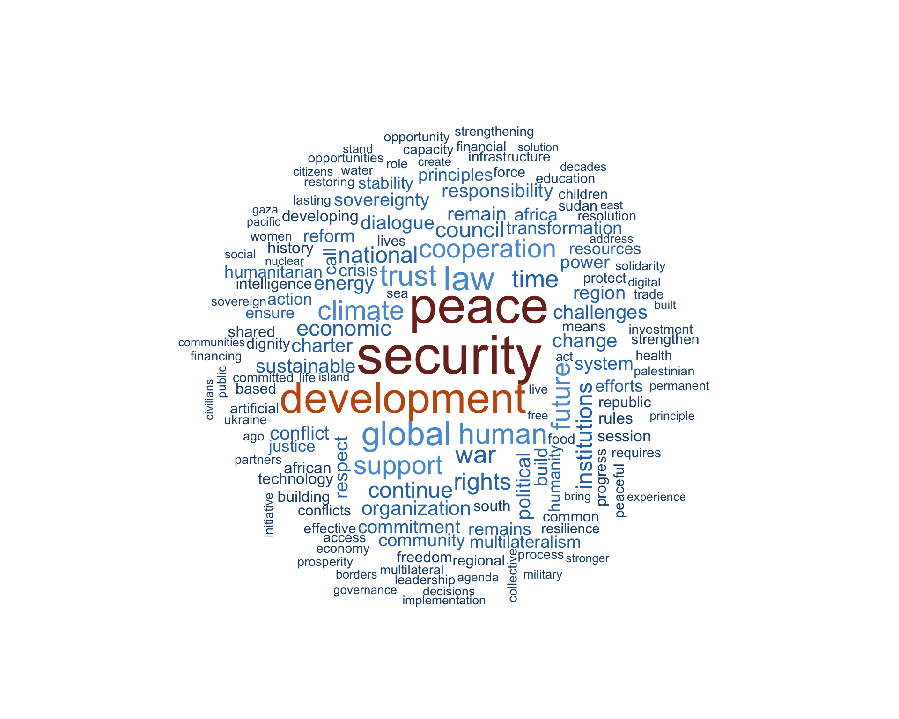
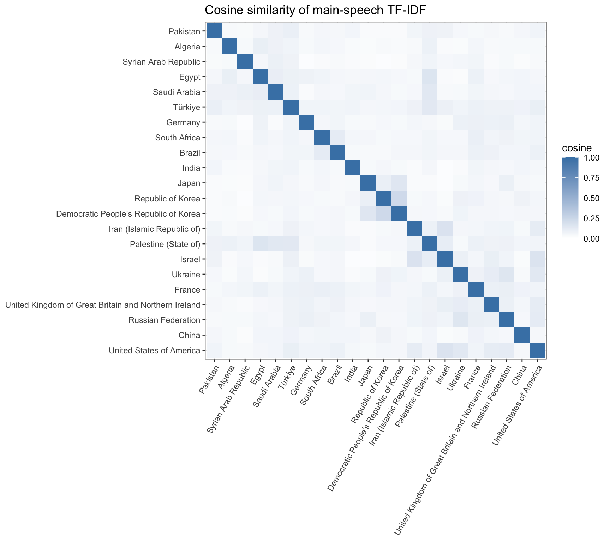
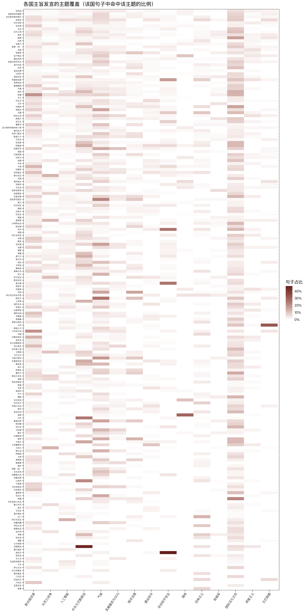
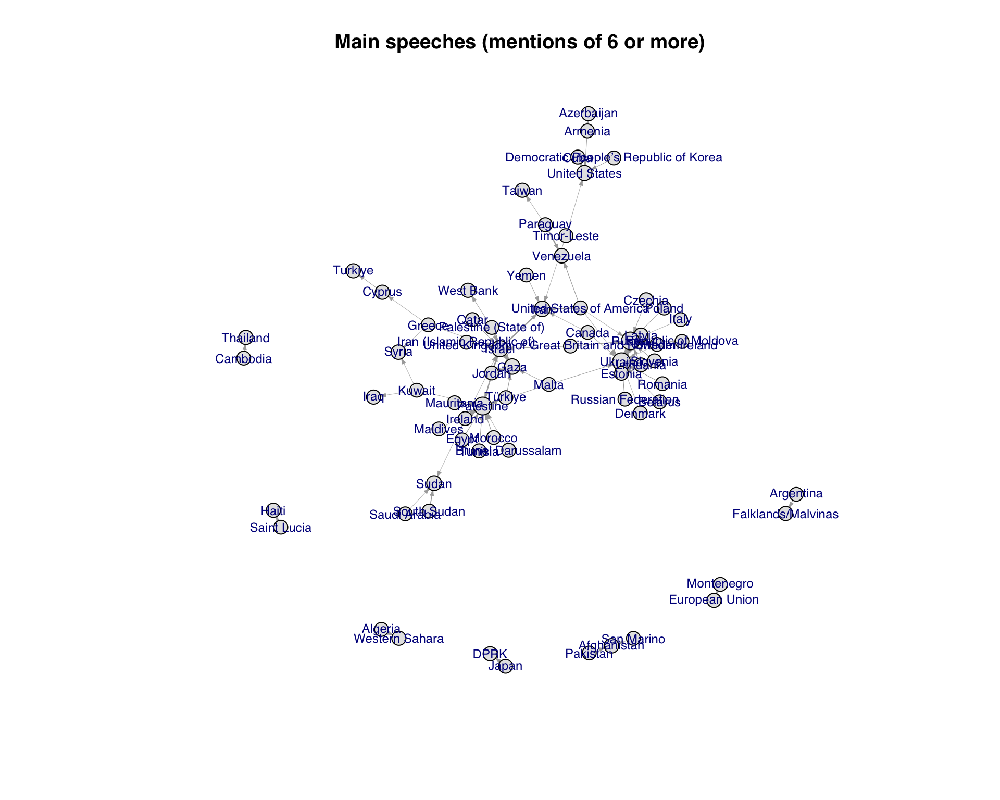
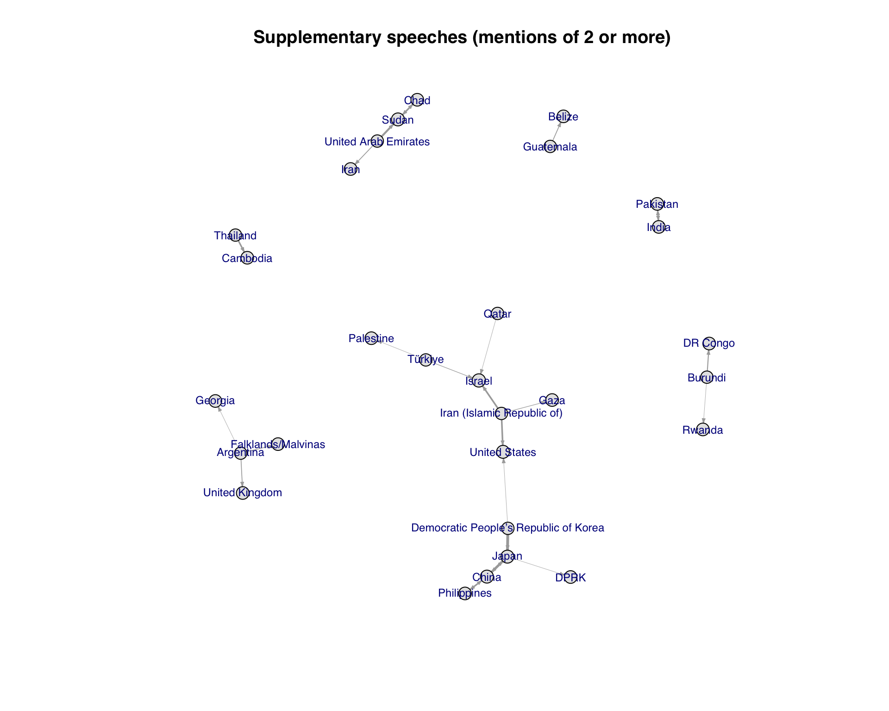

International organizations
Reading the 81st UN General Debate through speeches: shared agendas, national differences and diplomatic disputes

The theme was “Rebuilding trust, managing change: A UN that delivers for all.” A textual analysis of delegations’ main speeches shows that international law and sovereignty, climate, the Middle East and UN reform were both cross-regional issues and distinct starting points from which delegations described their own circumstances. References to other countries reveal another side of the debate: within one shared multilateral forum, several highly specific bilateral and regional disputes unfolded.
Word frequency counts occurrences of terms. The share of speaking entities for a topic is the proportion of the 194 entities with at least one matching sentence. Similarity reflects closeness of wording only. Naming another entity does not by itself indicate approval or criticism. The figures 194 and 27 count speech records. The speaking entities include the European Union and Palestine, and should not be read as numbers of UN member states.
1. Scope and meeting context
The General Assembly comprises all UN member states and is a principal deliberative, supervisory and review body of the UN. This year’s General Debate took place at UN headquarters in New York from 22 to 28 September. During the same period, high-level meetings addressed climate action and a just transition, the 40th anniversary of the Declaration on the Right to Development, the existential threat of sea-level rise, pandemic prevention and response, and the 25th anniversary of the Durban Declaration and Programme of Action.
The statistics below cover only General Debate statements, excluding speeches at these parallel thematic meetings. Sections 1–4 use only main speeches. Section 5 examines who names whom, still in main speeches. Section 6 examines supplementary statements separately. Statements by the Secretary-General and the President of the General Assembly are excluded.
2. What did speakers discuss? Security, development and institutions
Among selected high-frequency content words in main speeches, “security” appeared 1,470 times, “development” 1,139, “global” 844, “trust” 703, “climate” 653 and “cooperation” 614. The debate was not organized around a single crisis. Security and development remained the most common shared vocabulary. Trust, institutions and cooperation reflected continued discussion of the UN’s role.

High-frequency words measure the visibility of an issue. They cannot show that countries attach the same meaning to it. “Security” may refer to armed conflict and borders in one speech, and to climate risks and food in another. “Development” may mean financing and debt for some, and technology and the energy transition for others.
3. Which speeches are similar? Shared issues are not shared positions
Calculating TF–IDF weights for terms in each main speech and comparing cosine similarity yields several relatively close pairs: Palestine–Jordan (0.25), the Democratic People’s Republic of Korea–Republic of Korea (0.23), and South Africa–South Sudan (0.20). The United States–Israel and Israel–Iran each score 0.17. Ukraine–Russia scores 0.16. Similarity scores are generally low. A shared diplomatic vocabulary has not erased differences between speeches.

Method: pairwise cosine similarity from TF–IDF term vectors.
Discussing the same object is not the same as holding the same position. Ukraine and Russia, Israel and Iran, and the two Koreas may refer to the same disputes and thus use similar words. That does not establish agreement on policy.
| Speaking entity | Three closest speeches (cosine similarity) |
|---|---|
| United States | Israel (0.17); Ukraine (0.14); Russia (0.12) |
| China | Nicaragua (0.11); Czechia (0.09); Kazakhstan (0.08) |
| Russia | Ukraine (0.16); Belarus (0.15); United States (0.12) |
| Ukraine | Russian Federation (0.16); United States of America (0.14); Republic of Moldova (0.13) |
| Israel | Iran (Islamic Republic of) (0.17); United States of America (0.17); Jordan (0.12) |
| Palestine | Jordan (0.25); Qatar (0.17); Egypt (0.16) |
| Iran | Israel (0.17); United States (0.12); European Union (0.09) |
| Democratic People’s Republic of Korea | Republic of Korea (0.23); Japan (0.15); Ukraine (0.07) |
| Republic of Korea | Democratic People’s Republic of Korea (0.23); Timor-Leste (0.12); Japan (0.10) |
| Brazil | South Africa (0.12); European Union (0.09); Ghana (0.09) |
| South Africa | South Sudan (0.20); Angola (0.14); Kenya (0.13) |
4. Fifteen predefined topics: breadth and emphasis
A sentence-by-sentence keyword classification of 21,312 sentences in main speeches found 977 sentences on international law and sovereignty (4.6% of sentences, across 180 speaking entities); 765 on climate (3.6%, across 153 entities); 700 on the Middle East and Palestine (3.3%, across 126 entities); and 660 on UN reform (3.1%, across 163 entities). Individual topic shares are generally in single digits because many sentences contain formalities, background, or subjects outside these 15 categories.
The two percentages describe different aspects of the agenda. UN reform appears at least once in speeches by 163 entities (84.0%), but accounts for 3.1% of all sentences. The Middle East and Palestine has a narrower reach (64.9%) but a slightly higher sentence share (3.3%). The number of entities discussing a topic should not be conflated with the amount of space devoted to it. Artificial intelligence and digital governance appears in speeches by 124 entities (63.9%), but matches 262 sentences (1.2%): it is already widely mentioned, yet still occupies relatively little space in lengthy national speeches.
Where each topic takes the largest share of a speech
Some issues show distinct national or regional concentrations. Sentences on climate account for 26% of Tuvalu’s main speech, 22% of Micronesia’s and 18% of the Marshall Islands’. Those on oceans account for 16% of Tonga’s and 13% of Palau’s. The Middle East and Palestine accounts for 45% of Palestine’s, 25% of Jordan’s and 21% of Israel’s. African peace and security accounts for 47% of South Sudan’s, 26% of Sudan’s and 25% of Somalia’s. Speaking entities discuss a shared UN agenda while putting their own circumstances of survival, development and security into it.
| Predefined topic | Highest shares within that entity’s own main speech |
|---|---|
| UN reform and multilateralism | Guinea-Bissau (20%); European Union (19%); Indonesia (13%); Chad (12%); Liberia (11%) |
| War in Ukraine | Ukraine (13%); Estonia (13%); Russian Federation (12%); Romania (11%); Lithuania (10%) |
| Artificial intelligence and digital governance | Albania (13%); European Union (6%); Angola (6%); Argentina (5%); Australia (5%) |
| Middle East conflicts and the Palestine question | Palestine (45%); Jordan (25%); Israel (21%); Qatar (16%); Mauritania (14%) |
| Climate action, resilience and finance | Tuvalu (26%); Micronesia (22%); Marshall Islands (18%); Djibouti (17%); Tonga (16%) |
| Development finance, debt reform and SDG implementation | United Republic of Tanzania (10%); Malawi (7%); Liberia (6%); Madagascar (6%); Namibia (6%) |
| Maritime security and ocean governance | Tonga (16%); Palau (13%); Tuvalu (11%); Micronesia (9%); Philippines (9%) |
| Conflict prevention, mediation and peacebuilding | Turkmenistan (10%); Gambia (6%); United Arab Emirates (6%); Equatorial Guinea (5%); Togo (5%) |
| African peace and security | South Sudan (47%); Sudan (26%); Somalia (25%); Burkina Faso (18%); Mali (9%) |
| Haiti crisis | Haiti (29%); Dominican Republic (10%); Saint Lucia (10%); Grenada (6%); Trinidad and Tobago (5%) |
| Terrorism and transnational crime | Yemen (13%); Mali (10%); Colombia (9%); Burkina Faso (8%); Iran (8%) |
| Nuclear disarmament | Kazakhstan (6%); Japan (5%); New Zealand (5%); Bulgaria (4%); South Africa (3%) |
| International law and state sovereignty | Oman (22%); Viet Nam (17%); Kuwait (16%); Seychelles (15%); Egypt (14%) |
| Reparatory justice and anti-racism | Ghana (5%); Namibia (5%); Suriname (5%); Burkina Faso (5%); Saint Lucia (4%) |
| Cuba sanctions and blockade | Cuba (32%); Nicaragua (6%); Angola (6%); Grenada (5%); Guinea-Bissau (4%) |
Full coverage heatmap: 194 speaking entities × 15 topics

Each cell is the share of sentences in that entity’s main speech matching the topic. Scroll inside the frame to read the full matrix.
5. Who names whom?
The most frequently named objects in main speeches are Palestine (269 mentions by 89 speaking entities), Ukraine (240 by 78), Russia (214 by 55), Israel (183 by 73), Gaza (159 by 70) and the United States (137 by 70). Palestine and Ukraine are objects of mention here. Gaza is a place-name. Showing them in one table does not imply that they have the same political or legal status.
Direction matters. Ukraine mentions Russia 48 times, Armenia mentions Azerbaijan 30 times, Cuba mentions the United States 21 times, Israel mentions Iran 19 times and Jordan mentions Israel 19 times. Jordan names both Israel and Palestine. A high frequency for the same object may convey very different meanings depending on the speaker.

This framework also helps read the scene in which some delegates walked out during Benjamin Netanyahu’s speech. A walkout is a diplomatic gesture in the chamber. Mentions of Israel, Gaza or Palestine in formal main speeches are a different kind of data. Neither whether a delegation walked out, nor its specific reason, can be inferred from word frequencies or the mention network. Remaining to listen does not imply support for the speech. A separate note discusses what that walkout can and cannot tell us.
6. Supplementary statements
The General Debate also contains 27 supplementary statement records from 18 speaking entities. Japan has three. Chad, China, the Democratic People’s Republic of Korea, Iran, the Philippines, Sudan and the United Arab Emirates have two each. Ten other entities have one each. One Palestinian statement introduced a video address by Abbas. The remaining 26 are rights-of-reply statements.
In supplementary statements alone, Japan is mentioned 47 times, Sudan 31, Israel 20, the United States 18 and China 15. Prominent directed relations include the Democratic People’s Republic of Korea → Japan (25), China → Japan (22), the United Arab Emirates → Sudan (17), Iran → Israel (14), Chad → Sudan (14), and Thailand → Cambodia (13). This differs from the broad thematic pattern of main speeches. Shorter supplementary statements often concentrate on a specific object of response.

Conclusion: several agendas under a shared vocabulary
This General Debate illustrates the General Assembly’s dual function. Terms such as “security,” “development” and “trust” provide a vocabulary countries can share, and international law and UN reform feature across most speeches. At the same time, climate risks are particularly urgent for island states, war for its direct parties, and regional security for African countries affected by conflict. The network of who names whom shows that an apparently unified General Debate contains several clearly directed lines of dispute.
Source: the author’s collection of 194 main speeches and 27 supplementary statements from the 81st UN General Debate, of which 26 supplementary statements were rights of reply. Charts and tables are based on textual analysis in R.